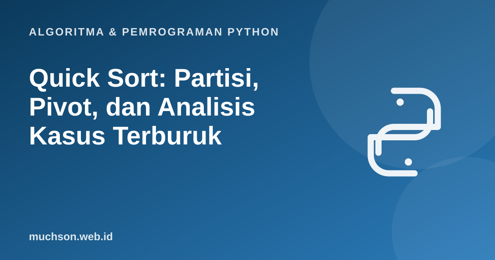

Beranda › Artikel › Algoritma & Pemrograman Python
Algoritma & Pemrograman PythonQuick Sort: Partisi, Pivot, dan Analisis Kasus Terburuk
Quick sort adalah algoritma pengurutan yang paling banyak ditiru dalam praktik: sangat cepat pada rata-rata, bekerja di tempat, dan sederhana. Kekuatan dan kelemahannya terletak pada satu hal: pemilihan pivot. Materi ini menunjukkan mengapa, dengan eksperimen yang bisa Anda lihat sendiri.
Sebaiknya sudah paham: merge sort, rekursi, analisis kompleksitas

Setelah membaca dan mencoba materi ini, Anda mampu:
- menjelaskan ide partisi di sekitar pivot
- mengimplementasikan quick sort di tempat dengan skema Lomuto
- menjelaskan mengapa kasus terburuk O(n²) dan kapan terjadi
- membandingkan strategi pemilihan pivot dengan eksperimen
- membandingkan quick sort dengan merge sort
Ide: partisi
Pilih satu elemen sebagai pivot. Susun ulang list sehingga semua elemen yang lebih kecil dari pivot berada di kiri, dan yang lebih besar di kanan. Setelah itu pivot sudah berada di posisi akhirnya. Urutkan kedua sisi secara rekursif. Tidak ada tahap penggabungan.
Implementasi di tempat (skema Lomuto)
def partisi(a, lo, hi):
pivot = a[hi] # pivot: elemen terakhir
i = lo - 1 # batas bagian "lebih kecil"
for j in range(lo, hi):
if a[j] < pivot:
i += 1
a[i], a[j] = a[j], a[i]
a[i + 1], a[hi] = a[hi], a[i + 1] # taruh pivot di tempatnya
return i + 1
def quick_sort(a, lo=0, hi=None):
if hi is None:
hi = len(a) - 1
if lo < hi:
p = partisi(a, lo, hi)
quick_sort(a, lo, p - 1)
quick_sort(a, p + 1, hi)
return a
print(quick_sort([9, 4, 7, 3, 10, 1, 8]))
print(quick_sort([5, 5, 2, 2]), quick_sort([]), quick_sort([1]))[1, 3, 4, 7, 8, 9, 10]
[2, 2, 5, 5] [] [1]
Mengapa pivot menentukan segalanya
import random
def quick_hitung(a, lo, hi, c, pilih):
if lo >= hi:
return
k = pilih(a, lo, hi)
a[k], a[hi] = a[hi], a[k] # pindahkan pivot terpilih ke ujung
pivot, i = a[hi], lo - 1
for j in range(lo, hi):
c[0] += 1
if a[j] < pivot:
i += 1
a[i], a[j] = a[j], a[i]
a[i + 1], a[hi] = a[hi], a[i + 1]
quick_hitung(a, lo, i, c, pilih)
quick_hitung(a, i + 2, hi, c, pilih)
import sys; sys.setrecursionlimit(10000)
n = 800
pilih_akhir = lambda a, lo, hi: hi
pilih_acak = lambda a, lo, hi: random.randint(lo, hi)
def pilih_median3(a, lo, hi):
m = (lo + hi) // 2
return sorted([lo, m, hi], key=lambda k: a[k])[1]
random.seed(3)
for nama, data in [("acak", random.sample(range(n), n)), ("sudah terurut", list(range(n)))]:
for sebut, p in [("pivot terakhir", pilih_akhir), ("pivot acak", pilih_acak), ("median-dari-3", pilih_median3)]:
c = [0]; quick_hitung(data[:], 0, n - 1, c, p)
print(f"{nama:<14}{sebut:<16}{c[0]:>9} perbandingan")acak pivot terakhir 8487 perbandingan
acak pivot acak 8812 perbandingan
acak median-dari-3 6953 perbandingan
sudah terurut pivot terakhir 319600 perbandingan
sudah terurut pivot acak 8727 perbandingan
sudah terurut median-dari-3 6187 perbandingan
Strategi pemilihan pivot yang umum: acak (membuat kasus terburuk sangat tidak mungkin pada masukan apa pun), median dari tiga (awal, tengah, akhir), atau introsort yang beralih ke heap sort bila rekursi terlalu dalam (dipakai di C++ std::sort).
Quick sort vs merge sort
| Aspek | Quick sort | Merge sort |
|---|---|---|
| Waktu rata-rata | Θ(n log n) | Θ(n log n) |
| Waktu terburuk | Θ(n²) (jarang dengan pivot acak) | Θ(n log n) |
| Ruang tambahan | O(log n) tumpukan rekursi (di tempat) | Θ(n) |
| Stabil | Tidak (versi umum) | Ya |
| Dalam praktik pada array | Sering lebih cepat (ramah cache) | Stabil dan dapat diprediksi |
1. Lakukan satu partisi pada [6, 3, 8, 2, 7, 4] dengan pivot terakhir (4). Tuliskan list sesudahnya dan indeks pivot.
2. Mengapa pada data terurut quick sort dengan pivot terakhir berjalan O(n²)?
3. Apa yang terjadi pada quick sort bila semua elemen sama? Bagaimana skema partisi tiga arah membantu?
- Quick sort: pilih pivot, partisi, urutkan dua sisi rekursif; tanpa tahap gabung.
- Rata-rata Θ(n log n), terburuk Θ(n²) bila pivot terus buruk.
- Pivot acak atau median-dari-tiga membuat kasus terburuk sangat jarang.
- Di tempat (ruang O(log n)) tetapi tidak stabil.
Tanya jawab
Apa itu partisi Hoare?
Mengapa pivot acak membantu?
Apakah sorted() Python memakai quick sort?
Referensi
- Cormen, Leiserson, Rivest, Stein, Introduction to Algorithms (edisi ke-4, MIT Press, 2022)
- Robert Sedgewick dan Kevin Wayne, Algorithms (edisi ke-4), materi pendamping algs4.cs.princeton.edu
- MIT OpenCourseWare 6.006: Introduction to Algorithms
- C. A. R. Hoare, Quicksort, The Computer Journal 5(1), 1962